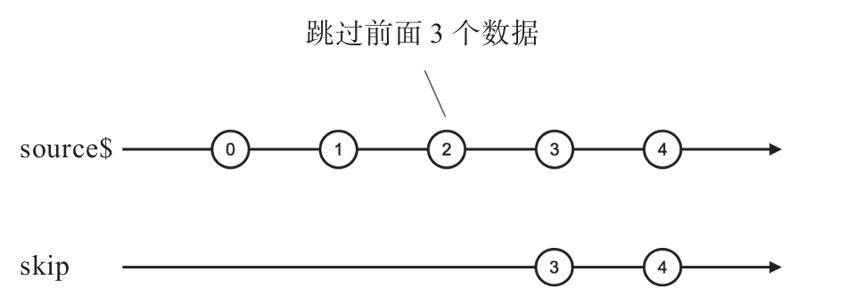

从上游Observable获取多个数据，除了“只拿满足条件的前N个”这种方式，还有“跳过前N个之后全拿”这种场景，满足这种场景要求的就是skip一族操作符，我们首先来介绍最简单的skip。
skip接受一个count参数，会默默忽略上游Observable吐出的前count个数据，然后，从第count+1个数据开始，就和上游Observable保持一致了，上游Observable吐出什么数据，skip产生的Observable就吐出什么数据，上游Observable完结，skip产生的Observable跟着完结。当然，如果上游吐出的数据不够count个，那skip产生的Observable就会在上游Observable完结的时候立刻完结。
下面的代码展示了skip的功能：
import 'rxjs/add/observable/interval'; import 'rxjs/add/operator/skip'; const source$ = Observable.interval(1000); const skip$ = source$.skip(3);
在等待3秒之后，skip$会吐出3、4、5……每隔一秒吐出一个递增的正整数，至于source$吐出的前3个数据0、1、2，就是被skip掉了。
这个过程的弹珠图如图7-8所示。

图7-8 skip的弹珠图
可以看到，skip产生的Observable对象会抛弃最初的3个数据，在等待第4个数据的过程中，静静消耗了4秒钟时间。